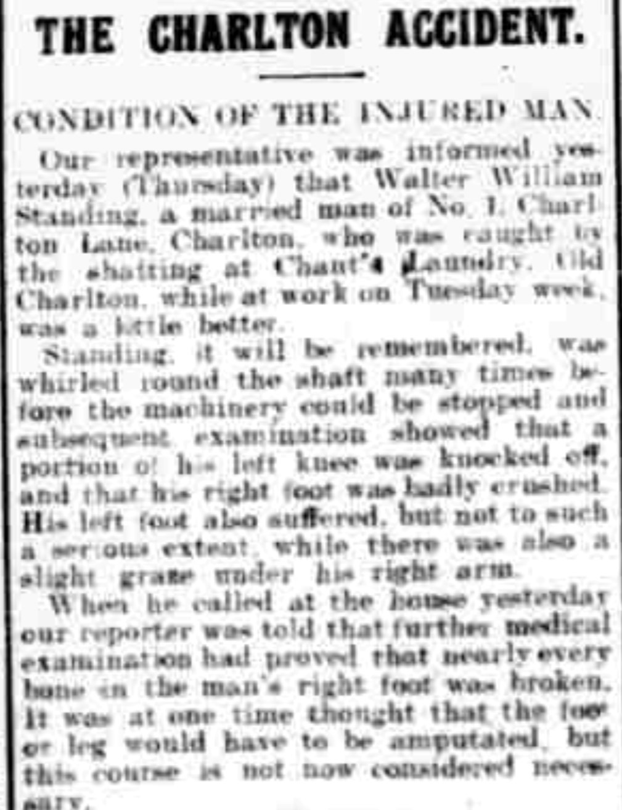

Walter William Standing 1873 - c1922
[ Home ] | [ Calendar ] | [ Surnames Index ] | [ Errors ] | [ Family History ]A laundry foreman and the eldest of 4 children of William Standing (a laundry keeper) and Adeliza Burnham, Walter Standing, the third cousin twice-removed on the father's side of Nigel Horne, was born in Folkestone, Kent, England on 5 Jul 18731,2, was baptised there at Christ Church on 3 Aug 1873 and married Jane Clark (a head packer in laundry with whom he had 3 children: William James, Doris Elizabeth and Ernest Henry) at Christ Church, Church Road, Kilndown, Kent, England on 12 Nov 18984.
During his life, he was living at York Rise, Highgate, London, England on 3 Apr 18815; at Edmund Street, Kettering, Northamptonshire, England on 5 Apr 18918; at Lansdowne Road, Charlton, London on 31 Mar 19016; on Charlton Lane, Charlton, London in 1907; and at 90 Charlton Lane, Charlton, London on 2 Apr 19117.
He died c. Oct 1922 in Woolwich, London, England3 and was buried in Greenwich, London, England on 9 Oct 1922.
Parents
- William Stephen was born in 1850
- Adeliza Martha was born on 19 Oct 1846
Children
- William James was born in Dec 1900
- Doris Elizabeth was born on 4 Jul 1905
- Ernest Henry was born on 23 Sept 1909
Citations
- England & Wales births 1837-2006 - Findmypast
- Kent Marriages And Banns - Findmypast
- England & Wales deaths 1837-2007 - Findmypast
- Kent Marriages - Findmypast
- 1881 England, Wales & Scotland Census - Findmypast (was age 7 and the son of the head of the household)
- 1901 England, Wales & Scotland Census - Findmypast (was age 27 and the head of the household)
- 1911 Census for England & Wales - Findmypast (was age 37 and the head of the household)
- 1891 England, Wales & Scotland Census - Findmypast (was age 11 and the son of the head of the household)
Media
Kentish Independent - 6 Dec 1907
Kentish Independent - 13 Dec 1907

England & Wales births 1837-2006 - BMD/B/1873/4/AZ/000494/231
England & Wales deaths 1837-2007 - BMD/D/1922/4/AZ/000848/125
1881 England, Wales & Scotland Census - GBC/1881/0001082522
1901 England, Wales & Scotland Census - GBC/1901/0005686452
Kent Marriages - PRS/FHS/KENT/MAR143/001400/G
1911 Census for England & Wales - GBC/1911/RG14/02850/0347/1
Kent, Canterbury Archdeaconry banns - GBPRS/CANT3/BANNS/001097/1
England & Wales marriages 1837-2005 - BMD/M/1898/4/AZ/000367/255
Kent marriages and banns - PRS/KENT/MAR/0027466/1
1891 England, Wales & Scotland Census - GBC-1891-0009158046
England Births & Baptisms 1538-1975 - R_884911138
Kent Baptisms - GBPRS/CANT/B/96012446
Family Tree

Map
Generated by ged2site. Last updated on Jul 3, 2024
Known Issues
Burial date (9 Oct 1922) has no citations
Residence record for 1907 contains no citation
Listed in the residence for 1907, but spouse Jane Clark is not